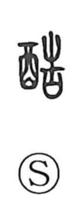

酷

Uncategorized
Kun: hidoi | On: koku
cruel ・ severe ・ harsh
Explanation
A phono-semantic character built with the wine/alcohol element and 告 as the phonetic, which gives the on reading koku. In the Shuowen it is defined as “thick liquor,” that is, a concentrated, high-proof alcohol. From this sense of potency and intensity, the character’s meaning broadened and was applied to human affairs, coming to describe what is severe, violent, or harsh.